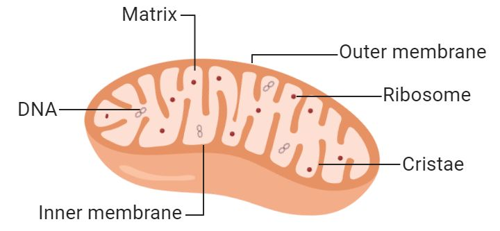

🧪 Cytoplasm
The jelly-like living substance that fills the cell and contains all the cell organelles.
Introduction
The cytoplasm is a semi-fluid, jelly-like living substance present between the plasma membrane and the nucleus. It occupies most of the space inside the cell and forms the medium in which the cell organelles are suspended.
The cytoplasm is made up mainly of water, dissolved salts, proteins, carbohydrates, fats and various enzymes. These substances help maintain the internal environment of the cell and support numerous biochemical reactions.
Almost all important life processes such as respiration, protein synthesis, transport of materials and metabolism take place either in the cytoplasm or within the organelles present in it. Therefore, the cytoplasm plays a vital role in keeping the cell alive and functioning properly.
In both plant and animal cells, the cytoplasm serves as the site where different organelles interact and work together. It also helps transport nutrients, gases and waste products from one part of the cell to another.
Functions of Cytoplasm
- Suspends and supports all cell organelles.
- Acts as the site of many metabolic reactions.
- Stores nutrients and other essential substances.
- Helps transport materials within the cell.
- Maintains the internal environment of the cell.
📌 Key Points
- Cytoplasm is a jelly-like living substance.
- It is present between the plasma membrane and the nucleus.
- It contains all the cell organelles.
- Most metabolic activities of the cell occur in the cytoplasm.
- It helps in the transport and storage of materials inside the cell.
📝 Remember
Cytoplasm = Jelly-like Living Substance + Cell Organelles + Site of Metabolic Activities
🎯 JKBOSE Exam Point
Frequently asked examination questions include:
- Define cytoplasm.
- Where is the cytoplasm located?
- State any four functions of the cytoplasm.
- Why is the cytoplasm important for the survival of a cell?
- Name the part of the cell that contains all the organelles.

Figure 1.6 — Cytoplasm filling the interior of a cell and surrounding the organelles.
❓ Practice Questions
- What is cytoplasm?
- Where is cytoplasm found in a cell?
- Write any five functions of cytoplasm.
- Why is cytoplasm called the site of metabolic activities?
- Name the organelles present in the cytoplasm.